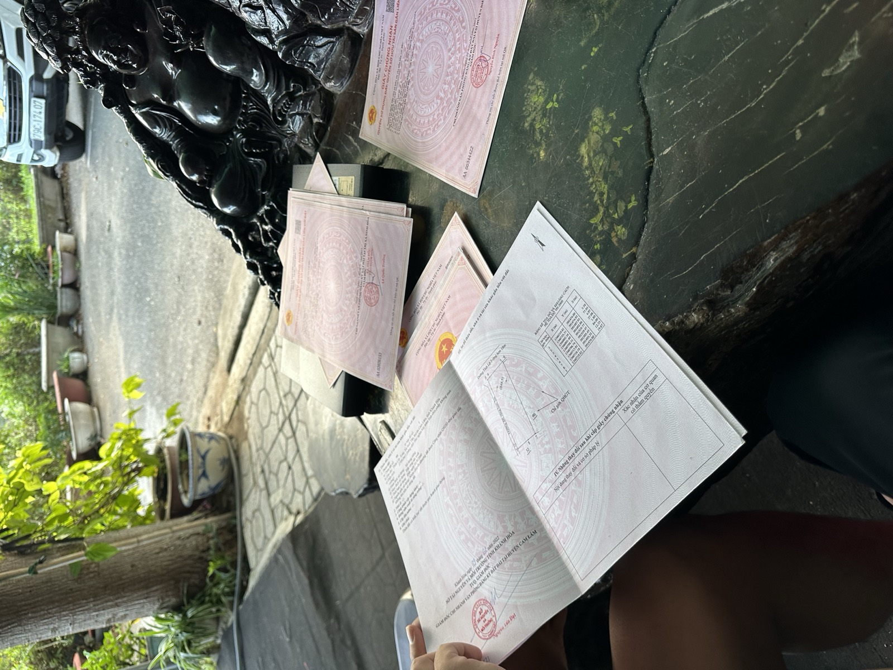

Lãi tiền gửi đã giảm ở cả 46 ngân hàng: người đang vay mua nhà nên hỏi ngân hàng 4 câu gì
Tin lãi suất giảm đọc rất dễ chịu. Nhưng con số được công bố là lãi tiền gửi và lãi vay phát sinh mới — còn khoản vay anh/chị ký từ một, hai năm trước thì chạy theo hợp đồng đã ký. Muốn biết mình có được gì từ đợt giảm này, cách nhanh nhất là gọi cho cán bộ tín dụng và hỏi đúng bốn câu dưới đây.

Câu trả lời cho khoản vay của mình nằm trong hợp đồng tín dụng, không nằm trên mặt báo.
Điều đã xảy ra, và điều chưa ai nói
Tại họp báo Chính phủ ngày 4/11, Ngân hàng Nhà nước cho biết 46/46 ngân hàng thương mại đã giảm lãi tiền gửi kỳ hạn từ 6 tháng thêm 0,5–0,7%/năm; lãi vay phát sinh mới cuối tháng 10 giảm 0,2–0,5 điểm % (nguồn: VnExpress 4/11/2026). Về mốc so sánh của mức giảm lãi vay, VnExpress viết "so với đầu tháng", CafeF cùng ngày viết "so với giữa tháng" — tôi ghi cả hai để anh/chị tự đối chiếu. Đến ngày 7/11, tiết kiệm 12 tháng ở nhóm bốn ngân hàng lớn đang là 6,8%/năm (nguồn: CafeF 7/11/2026).
Điều chưa có là một con số riêng cho vay mua nhà. Sáng 9/11 tôi tra lại và chưa tìm thấy báo cáo nào tháng 11 nói lãi vay mua nhà đã giảm bao nhiêu, càng không thấy thông báo chung về việc điều chỉnh cho khoản vay cũ. Số gần nhất tôi có là từ tháng 8: DKRA ghi nhận lãi cố định 12–24 tháng ở 11 ngân hàng lớn bình quân 10,9%/năm, sau ưu đãi có thể lên 13–15%/năm (nguồn: Nhà Đầu Tư, 8/2026). Số này có trước đợt giảm, nên chỉ nên xem là bối cảnh.
Một cảnh báo dễ nhầm: các gói giảm sâu 1,5–2% mà ngân hàng công bố thời gian qua dành cho sản xuất kinh doanh. Người vay mua nhà phải hỏi riêng mức áp cho mình, đừng lấy con số đó ra tính.
Câu 1: Khoản vay của tôi đang ưu đãi cố định hay đã thả nổi, và kỳ điều chỉnh tiếp theo là ngày nào?
Mọi thứ phía sau phụ thuộc vào câu này.
- Còn trong giai đoạn cố định: lãi của anh/chị thường đứng yên cho tới khi hết thời hạn ưu đãi, dù thị trường giảm. Việc cần làm là ghi vào lịch ngày hết ưu đãi.
- Đã thả nổi: lãi được tính lại theo kỳ ghi trong hợp đồng. Hỏi rõ kỳ tiếp theo vào ngày nào, và lần điều chỉnh gần nhất đã lấy số nào làm gốc.
Đừng dừng ở câu "em ơi lãi của anh bao nhiêu". Con số hôm nay chưa nói được kỳ sau sẽ ra sao.
Câu 2: Lãi của tôi được tính từ gốc nào, cộng biên độ bao nhiêu, biên độ có đổi không?
Lãi thả nổi thường là một mức lãi cơ sở cộng một biên độ. Cái gốc mỗi nơi một khác, nên phải xem đúng hợp đồng của mình. Hai cách mô tả tôi có trong tay không giống nhau: khảo sát tôi ghi lại cuối tháng 7/2026 là lãi tiết kiệm 24 tháng hoặc lãi tham chiếu, cộng biên độ 3,3–3,5%/năm; một phân tích khác năm 2026 nêu lãi tiết kiệm 12 tháng cộng 3,5–4% (nguồn: Nhà Đầu Tư, 2026).
Vì vậy có ba điều cần hỏi cho ra:
- Gốc là lãi tiết kiệm kỳ hạn nào, hay là một mức lãi cơ sở do ngân hàng tự công bố? Nếu là mức ngân hàng tự công bố, lãi tiền gửi giảm chưa chắc kéo theo mức đó giảm ngay.
- Biên độ bao nhiêu, ghi ở điều khoản nào?
- Biên độ có thay đổi được không, trong trường hợp nào, ai có quyền đề nghị?
Câu 3: Nếu tôi trả trước hạn hoặc chuyển sang ngân hàng khác thì mất phí bao nhiêu?
Lãi nơi khác thấp hơn chưa chắc đã đáng chuyển. Phí trả nợ trước hạn do hợp đồng quy định, và mỗi hợp đồng một kiểu: có nơi tính theo phần trăm số trả trước, có nơi giảm dần theo năm vay, có nơi miễn sau một mốc. Hỏi thêm: nếu trả trước khi hết ưu đãi thì có bị thu hồi phần ưu đãi không.
Chuyển ngân hàng còn có các chi phí đi kèm như giải chấp, công chứng, đăng ký thế chấp lại, định giá lại tài sản, và cả khoảng thời gian cần vốn để tất toán khoản cũ. Nhờ ngân hàng mới liệt kê đủ bằng văn bản trước khi quyết.
Câu 4: Nếu muốn xin điều chỉnh thì cần hồ sơ gì, và ai là người quyết?
Hỏi xem ngân hàng có kênh xem xét cho khoản vay cũ không, nộp ở đâu, trả lời trong bao lâu, kết quả có được ghi thành phụ lục hợp đồng không. Yêu cầu giấy tờ tuỳ nơi; thường anh/chị nên chuẩn bị sẵn hợp đồng tín dụng, lịch trả nợ và giấy tờ thu nhập cập nhật. Một lời hứa miệng qua điện thoại không làm thay đổi hợp đồng.
Giảm 0,5 điểm thì nhẹ đi bao nhiêu mỗi tháng?
Phép tính dưới đây là giả định để hình dung, không phải lãi suất của ngân hàng nào: khoản vay 2 tỷ, thời hạn 20 năm, trả góp đều, lãi từ 12%/năm xuống 11,5%/năm.
| Mức lãi giả định | Lãi tháng đầu | Trả góp đều mỗi tháng |
|---|---|---|
| 12%/năm | 20,00 triệu | khoảng 22,02 triệu |
| 11,5%/năm | khoảng 19,17 triệu | khoảng 21,33 triệu |
| Chênh lệch | khoảng 833 nghìn | khoảng 690 nghìn |
Bây giờ đặt nó cạnh câu 3. Giả sử phí chuyển và các chi phí đi kèm tổng cộng 40 triệu đồng (2% của 2 tỷ, cũng là giả định). Với khoảng 690 nghìn tiết kiệm mỗi tháng, anh/chị cần khoảng 58 tháng, gần 5 năm, mới hoà. Đó là lý do một khoản giảm 0,5 điểm có thể đáng mừng nếu tự đến ở kỳ điều chỉnh, nhưng chưa chắc đáng để chuyển ngân hàng. Anh/chị thay số thật trong hợp đồng của mình vào là ra câu trả lời riêng.
Tin tức cho biết thị trường đi hướng nào. Hợp đồng mới cho biết khoản vay của mình đi hướng nào.
Việc có thể làm trong tuần này
- Lấy hợp đồng tín dụng ra, đánh dấu ba chỗ: ngày hết ưu đãi, công thức lãi thả nổi, điều khoản phí trả trước hạn.
- Gọi cán bộ tín dụng, hỏi bốn câu trên, ghi lại câu trả lời kèm ngày.
- Thay số thật vào phép tính, xem chênh lệch mỗi tháng và thời gian hoà vốn nếu có chi phí phát sinh.
Bài này không có câu trả lời "nên hay không nên vay", và tôi cũng không gợi ý ngân hàng nào. Mỗi hợp đồng một khác; thứ tôi muốn chia sẻ là bộ câu hỏi để anh/chị tự có đáp án cho mình.
Số liệu tổng hợp từ báo chí và ghi nhận của Ngân hàng Nhà nước theo ngày đã ghi, tra cứu lại ngày 9/11/2026; đây không phải biểu lãi suất của bất kỳ ngân hàng nào. Các phép tính là giả định minh hoạ. Điều kiện thực tế theo hợp đồng tín dụng và thông báo của ngân hàng cho vay. Bài không nhằm khuyến nghị vay, không vay, trả nợ trước hạn hay chuyển ngân hàng; không phải tư vấn tài chính hay pháp lý.
"Rồi, ngày mới tốt lành nhé."
Sống tử tế · Kiếm tiền hạnh phúc · Cho đi giá trị
Muốn nhận bản tin thị trường qua Zalo?
Tôi đọc tin thị trường và gửi bản tóm tắt cho khách qua Zalo vào sáng thứ Ba, thứ Năm, thứ Bảy, kèm tổng hợp cuối tuần — có ghi nguồn và nói rõ chỗ nào số liệu đang vênh. Nhắn "BẢN TIN" để nhận miễn phí.
Nhắn Zalo — 0869 668 638